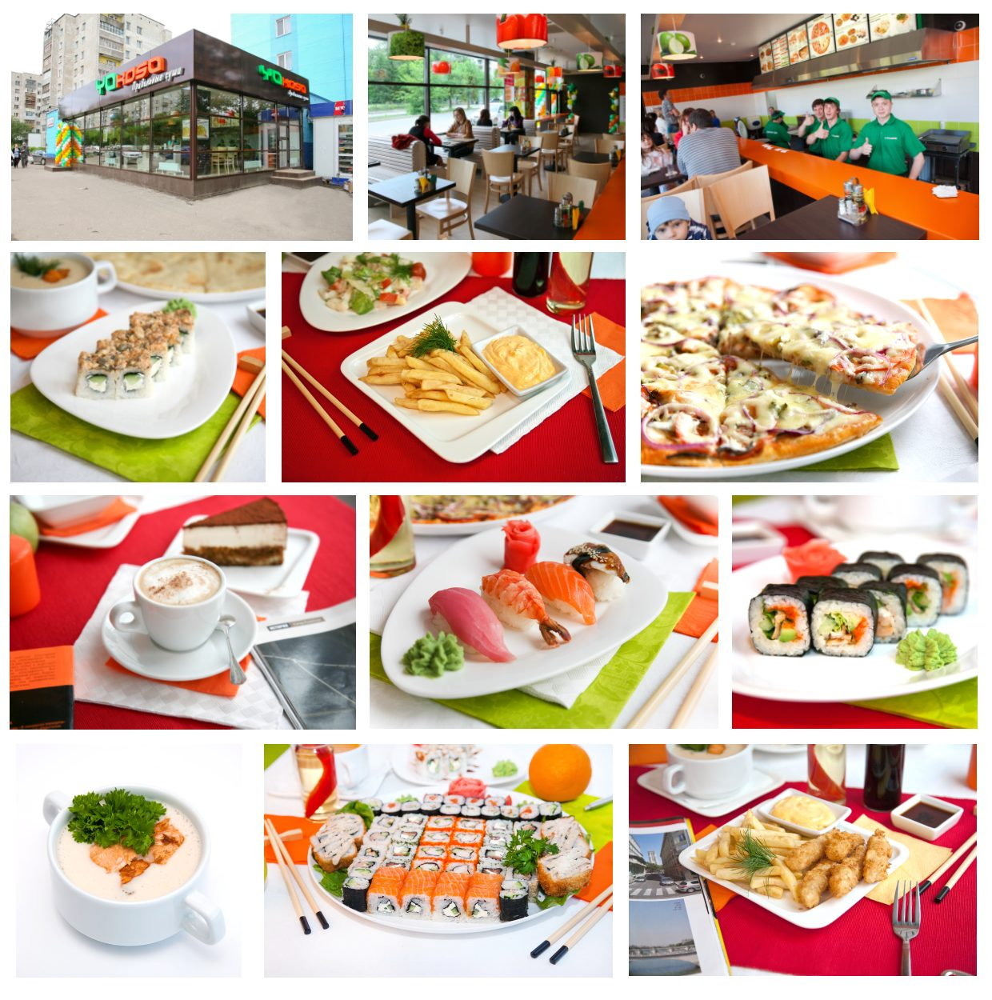
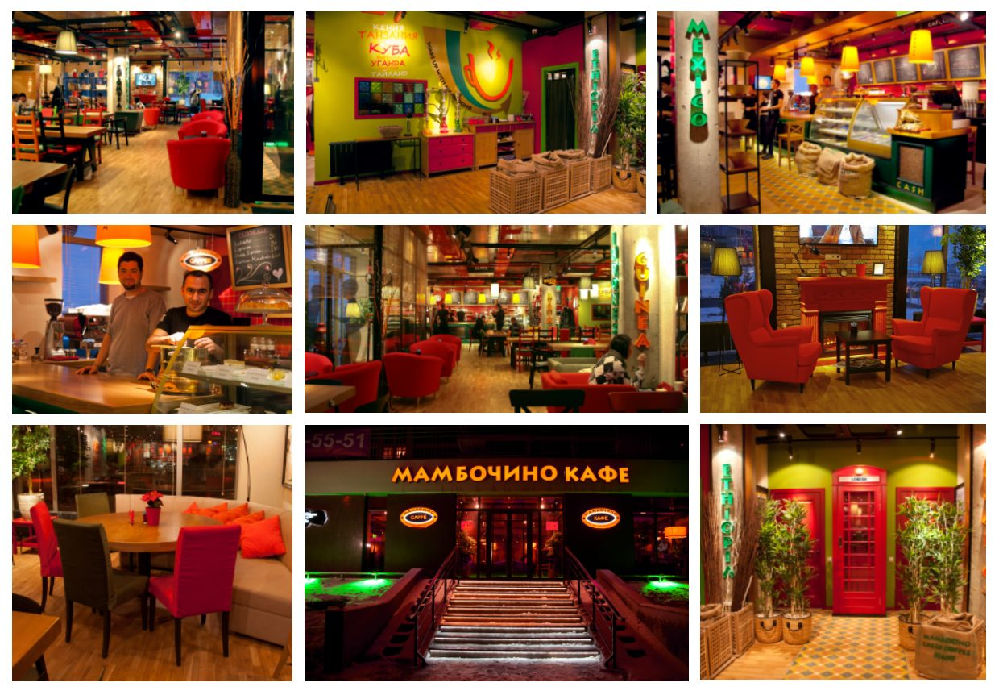

← All work
Food, interior and exterior
Photography & Retouching
Photo shoots for restaurant and retail clients, followed by retouching, colour correction and preparation for menus, flyers and outdoor advertising.
- Role
- Photographer and retoucher
- Deliverables
- Food and product photography, interiors and exteriors, retouching, compositing, print-ready files
- Tools
- Photoshop


